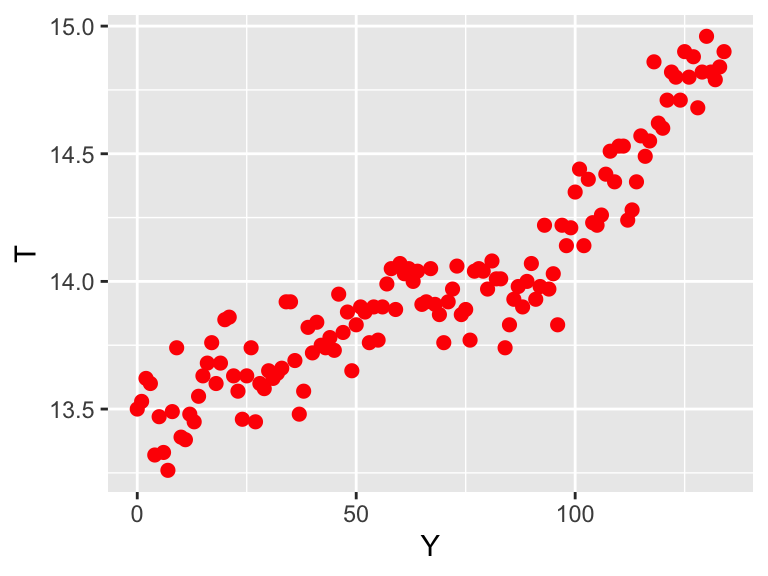

2.1 Plotting histograms in R
In Chapter ?? we discussed probability distributions. Here we are going to discuss them a little more, but now we will first discuss plotting histograms in R. A quick recap of a histogram: this is a binned plot of data, where there are some predefined bins and we count the number of observations in each bin. One way we can do this for (smaller) data is a dot plot, where this is a dot in each observation.
Consider the dataset of snowfall observations from weatherstations in Minnesota shown in Table ??, with the following table.
knitr::kable(snowfall, caption = "Weather station data from a Minnesota snowstorm.")| date | time | station_id | station_name | snowfall |
|---|---|---|---|---|
| 4/16/18 | 5:00 AM | MN-HN-78 | Richfield 1.9 WNW | 22.0 |
| 4/16/18 | 7:00 AM | MN-HN-9 | Minneapolis 3.0 NNW | 19.0 |
| 4/16/18 | 7:00 AM | MN-HN-14 | Minnetrista 1.5 SSE | 12.5 |
| 4/16/18 | 7:00 AM | MN-HN-30 | Plymouth 2.4 ENE | 18.5 |
| 4/16/18 | 7:00 AM | MN-HN-58 | Champlin 1.5 ESE (118) | 20.0 |
| 4/16/18 | 7:00 AM | MN-HN-89 | Edina 1.7 N | 11.0 |
| 4/16/18 | 7:00 AM | MN-HN-110 | Edina 1.9 SSE | 15.5 |
| 4/16/18 | 7:00 AM | MN-HN-134 | Brooklyn Center 1.1 E | 13.5 |
| 4/16/18 | 7:00 AM | MN-HN-150 | Maple Grove 1.8 NE | 22.0 |
| 4/16/18 | 8:00 AM | MN-HN-17 | Eden Prairie 3.3 WSW | 16.0 |
| 4/16/18 | 8:00 AM | MN-HN-72 | Maple Grove 2.9 NE | 13.0 |
| 4/16/18 | 8:00 AM | MN-HN-175 | Bloomington 2.0 SE | 13.1 |
| 4/16/18 | 8:30 AM | MN-HN-19 | Edina 1.3 SW | 11.0 |
| 4/16/18 | 8:30 AM | MN-HN-31 | Maple Grove 1.0 NNE | 19.5 |
| 4/16/18 | 6:00 PM | MN-HN-215 | Richfield 1.4 W | 18.0 |
| 4/16/18 | 10:30 PM | MN-HN-5 | New Hope 1.9 S | 13.0 |
Sometimes we don’t want to put all the data as a list, but we group observations together - so let’s sort this into bins of XXX mm.
One way to visualize these is to have a dot for each observation in the table (GT TABLE?)
What a histogram does is effectively rotate the dot plot, so the values are on the horiztonal axis.
Doing a histogram in R is easy to do You may wonder what about bins - can you control that? Yes … to an extent. Some good thought has gone into what should they do for binning the data, or how wide to do them. The default is if the bins are equal to the sqrt of the number of observations.
ggplot(data = snowfall) +
geom_histogram(aes(x = snowfall),) +
labs(x='Snowfall amount',
y='Number of observations')## `stat_bin()` using `bins = 30`. Pick better value with `binwidth`.
This code introduces geom_histogram. Notice , which has two key inputs:
- The code
aes(x = snowfall)is computing the histogram for thesnowfallcolumn in the datasetsnowfall. You may have received a warning about the binsstat_bin()` using `bins = 30`. Pick better value with `binwidth, so let’s adjust the number of bins to 4:
ggplot() +
geom_histogram(data = snowfall, aes(x = snowfall),bins = 4) +
labs(x='Snowfall amount',
y='Number of observations')
Your code may look blockier, but that is ok.